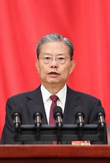
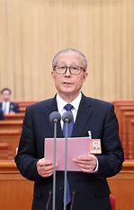
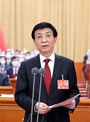
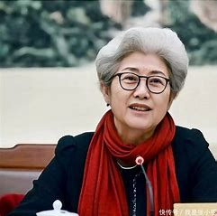

人物简介

赵乐际
职务：现任第十四届全国人民代表大会常务委员会委员长。 简介：赵乐际是全国人大的领导核心，负责主持全国人大常委会的工作。他致力于推动国家立法和监督工作的顺利进行，确保宪法和法律的正确实施，维护国家法制统一和尊严。

李鸿忠
职务：现任第十四届全国人民代表大会常务委员会副委员长。 简介：李鸿忠作为全国人大常委会的重要成员，积极参与国家立法和监督工作，为推动国家法治建设和社会进步做出了积极贡献。

王沪宁
职务：现任第十四届全国政协主席。 简介：王沪宁是政协的领导核心，他致力于推动政协事业的发展，加强各党派、团体和各族各界人士的团结合作，为构建和谐社会、推动国家发展发挥了重要作用。
石泰峰
职务：现任第十四届全国政协副主席。 简介：石泰峰是政协的重要领导人之一，他积极参与政协的各项活动，为促进政治协商、民主监督和参政议政做出了积极贡献。

傅莹
职务：曾任第十二届全国人民代表大会外事委员会主任委员、全国人大新闻发言人。 简介：傅莹以其出色的外交能力和亲和力，在国内外享有很高的声誉。她曾担任全国人大新闻发言人，向世界介绍中国的人大制度和民主法治建设，增进了国际社会对中国的理解和信任。
万钢
职务：曾任第十二届全国政协副主席，致公党中央主席。 简介：万钢是一位知名的科学家和政治家，他在科技领域有着卓越的成就。同时，他积极参与政协工作，为推动科技创新和社会发展做出了积极贡献。